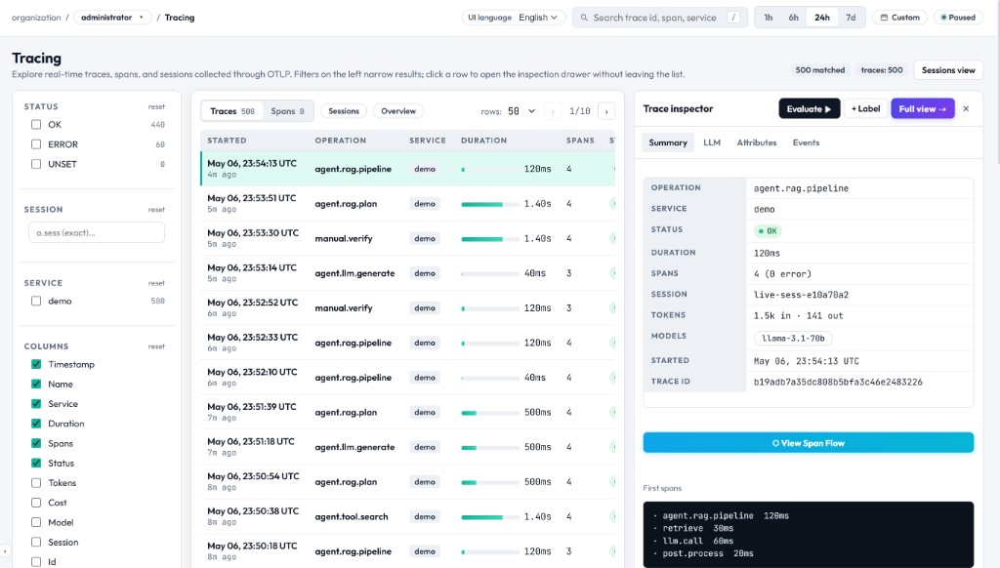
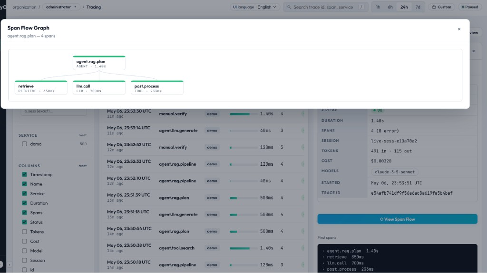
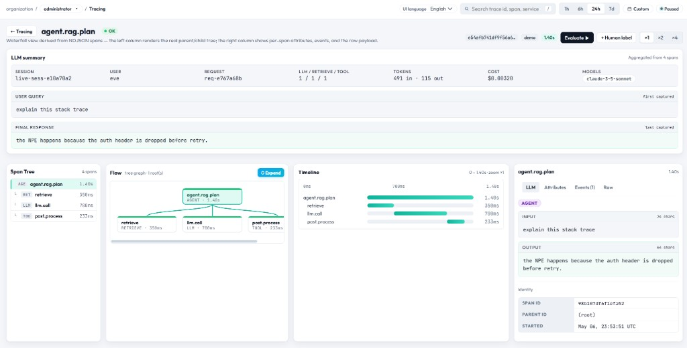

트레이싱 — 전체 기능 매뉴얼
트레이싱 페이지는 EasyObs가 수집한 모든 에이전트 호출을 탐색하는 핵심 화면입니다. Traces / Spans 두 개의 뷰, 풍부한 필터, 컬럼 토글, 슬라이드 인스펙터 드로어, 그리고 그래프 기반 플로우 시각화를 제공합니다.

페이지 레이아웃
트레이싱 페이지는 세 영역으로 구성됩니다.
| 영역 | 위치 | 역할 |
|---|---|---|
| Filter Panel | 좌측 사이드바 | Status, Session, Service, 컬럼 토글 필터 |
| Data Table | 중앙 | Trace 또는 Span 목록을 페이지네이션과 정렬 가능한 컬럼으로 제공 |
| Inspector Drawer | 우측 패널 (행 클릭 시) | 선택한 트레이스의 상세 뷰. 4개의 서브 탭으로 구성됨 |
탭: Traces vs. Spans
상단 세그먼트 컨트롤로 두 가지 관점을 전환할 수 있습니다.
Traces 탭 (기본)
완료된 에이전트 호출 단위로 한 행씩 표시합니다(루트 스팬 + 모든 자식 스팬). 각 행이 보여주는 항목은 다음과 같습니다.
| 컬럼 | 기본 표시 | 설명 |
|---|---|---|
Started | Yes | 시작 시각 (절대 시각 + "3분 전" 형식의 상대 시각) |
Operation | Yes | 루트 스팬 이름 (예: "agent.turn") |
Service | Yes | service.name 리소스 속성에서 가져온 서비스 이름 |
Duration | Yes | End-to-end 지연 시간 (최대 2초 스케일의 비례 미니바 포함) |
Spans | Yes | 해당 트레이스 내 전체 스팬 수 |
Status | Yes | OK (녹색) / ERROR (빨간색) / UNSET (회색) |
Tokens | No (LLM 모드) | 모든 LLM 스팬의 o.tok.in + o.tok.out 합계 |
Cost | No (LLM 모드) | o.price 기반 USD 비용 ($0.0012 형식) |
Model | No (LLM 모드) | 해당 트레이스에서 주로 사용된 LLM 모델 이름 |
Session | No (LLM 모드) | 멀티턴 그룹핑용 세션 ID (o.sess) |
Trace ID | No | 32자리 hex 트레이스 식별자 전체 |
?session=... 파라미터로 진입하면 Tokens/Cost/Model/Session 컬럼이 자동으로 켜져 LLM 관련 데이터를 즉시 확인할 수 있습니다.
Spans 탭
개별 스팬을 한 행씩 평탄화해서 보여줍니다(스팬 단위 뷰).
| 컬럼 | 설명 |
|---|---|
| Name | 스팬 작업명 |
| Kind | o.kind 속성 배지: agent / llm / retrieve / tool / chain |
| Model | LLM 모델 이름 (kind=llm 인 경우) |
| Service | 서비스 이름 |
| Duration | 스팬 단위 지연 시간 (미니바 포함) |
| Tokens | 스팬별 토큰 수 |
| Cost | 스팬별 USD 비용 |
| Status | OK / ERROR / UNSET |
| Trace | 부모 트레이스 ID (단축 표시, 클릭 시 상세 페이지로 이동) |
필터 패널 (좌측 사이드바)
Status 필터
OK, ERROR, UNSET을 다중 선택할 수 있는 체크박스입니다. 각 항목 옆에는 매칭되는 트레이스 개수가 표시됩니다. "reset"을 클릭하면 초기화됩니다.
Session 필터
o.sess 값을 정확히 일치 검색하는 입력 필드입니다. 값이 설정되면 해당 세션 ID가 태깅된 트레이스만 표시되며, 페이지 헤더에 활성 필터 칩이 나타나고 × 버튼으로 해제할 수 있습니다.
Service 필터
트레이스 수가 많은 순으로 최대 10개의 서비스를 다중 선택 체크박스로 표시합니다. 각 서비스 옆에는 트레이스 개수가 함께 노출됩니다.
컬럼 토글
11개 컬럼을 각각 켜고 끌 수 있습니다. "reset"을 클릭하면 기본 6개 컬럼만 보이는 상태로 돌아갑니다.
페이지네이션
- 페이지당 행 수: 25 / 50 / 100 / 200 중 선택
- 페이지 이동: ← 이전 / 현재/총 페이지 / 다음 →
- 필터나 시간 범위가 바뀌면 페이지가 1로 초기화됩니다.
전역 검색 연동
상단 검색 입력(/ 키로 포커스)을 통해 루트 이름, 트레이스 ID, 서비스 이름을 대소문자 무시 부분 일치로 실시간 필터링합니다.
시간 범위 연동
상단 시간 윈도우(1h / 6h / 24h / 7d / Custom)에 따라 가져올 트레이스 범위가 결정됩니다. Live 모드가 켜져 있으면 5초마다 테이블이 자동으로 새로고침됩니다.
트레이스 인스펙터 드로어
임의의 행을 클릭하면 우측 인스펙터 드로어가 열립니다. 헤더 액션 버튼과 4개의 서브 탭으로 구성되어 있습니다.

드로어 헤더 액션
| 버튼 | 동작 |
|---|---|
| Evaluate → | 해당 트레이스를 미리 채운 상태로 Quality > Runs 페이지로 이동 |
| + Label | Trace ID를 미리 채운 상태로 Golden Sets > Human Labels로 이동 |
| Full view → | Full View 열기: LLM 요약, 스팬 트리, 플로우 DAG, 타임라인 워터폴, 스팬별 인스펙터를 한 페이지에서 볼 수 있는 전체 화면 |
| × | 드로어 닫기 |
탭: Summary
트레이스의 핵심 정보를 키-값 형태로 보여줍니다.
- Operation → 루트 스팬 이름
- Service → 서비스 이름
- Status → 색상 배지
- Duration → End-to-end 지연 시간
- Spans → 전체 스팬 수 (에러 N건)
- Session → 세션 ID (있을 경우)
- Tokens → 입력/출력 토큰 분리 표기
- Cost → 총 USD 비용
- Models → 사용된 모든 LLM 모델 (칩 형태)
- Started → 절대 시각
- Trace ID → 식별자 전체
KV 목록 아래에는 두 가지 액션이 있습니다.
- View Span Flow → 트레이스 전체를 방향성 그래프로 보여주는 중앙 모달을 엽니다(스팬당 노드 1개, 부모-자식 엣지, 지연 시간 라벨, 스팬 종류별 색상 — 지원되는 스팬 종류 참조). 위 인스펙터 스크린샷에 이 모달이 함께 포함되어 있어 별도 그림은 생략합니다.
- First spans → 첫 몇 개 스팬을 들여쓰기 + 이름 + 지연 시간 형식으로 텍스트 미리보기 합니다.
탭: LLM
LLM 호출 요약 카드를 정돈된 형식으로 보여줍니다.
- 모델 이름과 provider
- 입력 프롬프트 (포맷팅, 스크롤 가능)
- 출력 결과
- 토큰 수 (in/out)
- 비용 분해
- 지연 시간
탭: Attributes
루트 스팬에 기록된 모든 OpenTelemetry 속성을 키-값 목록으로 보여줍니다. 표준 속성과 EasyObs o.* 네임스페이스 속성을 모두 포함합니다.
탭: Events
해당 트레이스 내 모든 스팬의 이벤트를 한 화면에 모아 보여줍니다. 각 이벤트는 이름과 소속 스팬을 함께 표시합니다. 실행 중 발생한 예외, 로그 메시지, 사용자 정의 이벤트를 확인할 때 유용합니다.
Full View (트레이스 상세 페이지)
Full View는 단일 트레이스를 전체 화면으로 깊이 탐색하는 전용 페이지입니다. 인스펙터 드로어의 Full view → 버튼으로 열거나, /workspace/tracing/detail/?id=<traceId>로 직접 접근할 수 있습니다. 리스트 뷰와 동일한 NDJSON 스팬 페이로드를 사용하지만, 헤더, LLM 중심 요약 밴드, 그리고 4개 컬럼의 작업 영역으로 분석 화면을 재구성합니다.

헤더 영역
- Operation — 루트 스팬 이름 (예:
agent.rag.plan)과 OK/error 배지 - 컨텍스트 줄 — 저장된 스팬에서 도출한 워터폴 뷰임을 알려주는 짧은 안내
- Trace ID — 식별자 (UI에서 단축 표기되며, 복사/인스펙터에서 전체 값을 확인 가능)
- Environment / service —
demo등의 서비스/환경 라벨 - Total duration — 트레이스 전체의 End-to-end 지연 시간
- Evaluate — 이 트레이스를 컨텍스트로 가지고 Quality 워크플로로 이동
- + Human label — 휴먼 라벨링/골든 셋 워크플로로 이동
LLM 요약 밴드
스팬을 깊이 들여다보기 전에 LLM 에이전트 트레이스에서 가장 중요한 정보를 한눈에 보여줍니다.
- 세션 & 식별 정보 — Session ID, 사용자(존재 시), 요청 ID
- 작업 구성 — 트레이스 내 LLM, retrieve, tool 스팬 개수
- 사용량 & 비용 — 토큰 합계(in/out), 추정 USD 비용, 주 모델 이름
- 대화 미리보기 — 빠른 점검을 위한 첫 사용자 입력과 마지막 어시스턴트 응답
4개 패널 작업 영역
아래 4개 패널은 서로 동기화되어, 한 패널에서 스팬을 선택하면 다른 패널에도 반영됩니다.
| 패널 | 역할 |
|---|---|
| Span tree | 모든 스팬(루트와 자식)을 지연 시간과 함께 계층 목록으로 보여줍니다. 빠른 탐색과 호출 구조 파악에 유용합니다. |
| Flow | 방향성 DAG 시각화. 부모 노드가 위에 있고 자식 노드가 아래로 이어지며, 호출 구조를 엣지로 표현합니다(모달 그래프와 동일한 트리, 상세 페이지용 레이아웃). |
| Timeline | 트레이스 시간축에 따른 워터폴/Gantt 차트. 막대 길이는 지연 시간, 세로 적층은 중첩을 나타내 동시성과 순서를 한눈에 볼 수 있습니다. |
| Inspector | 선택된 스팬의 상세 정보. LLM(해당 시 프롬프트/응답), Attributes, Events(개수 포함), Raw 탭을 제공합니다. 스팬 ID, 시작 시각 등 디버깅에 필요한 필드도 함께 표시됩니다. |
드로어가 좁다고 느껴질 때 Full View를 사용하세요. 긴 프롬프트, 깊은 트리, 타임라인-그래프 비교, 워터폴을 띄워둔 채 스팬 단위로 디버깅할 때 특히 유용합니다.
지원되는 스팬 종류 & 속성
Kind (o.kind) | 배지 색상 | 주요 속성 | 설명 |
|---|---|---|---|
agent | Blue | o.q, o.r, o.sess, o.user | 루트 에이전트 턴 — 전체 오케스트레이션 |
llm | Purple | o.model, o.tok.in, o.tok.out, o.price | LLM API 호출(추론) |
retrieve | Green | o.target, o.q | 벡터 검색 / 문서 검색 |
tool | Orange | o.tool, 입력/출력 | 외부 도구 호출 |
chain | Teal | (LangChain 콜백을 통해 자동 캡처) | LangChain 체인/워크플로 단계 |
비용 & 토큰 추적
가격 책정 파이프라인은 다음과 같이 동작합니다.
- 에이전트 SDK가 각 LLM 스팬에
o.tok.in,o.tok.out을 기록합니다. - 수집 시 서버가
o.price= 토큰 수 × 토큰당 단가로 보강합니다. - 가격 소스 우선순위:
tokencost→litellm→ 내장 fallback 테이블 EASYOBS_PRICING_SOURCE로 설정 가능합니다.- 트레이스 단위 총비용은 모든 LLM 스팬 비용의 합으로 계산됩니다.
데이터 흐름
UI/UX 관점에서 운영자가 체감하는 "거의 실시간 트레이스 가시성"은, 사실 SDK 내보내기에서 시작해 파싱·보강·질의 가능한 행으로 변환되는 수집 파이프라인의 결과입니다.
키보드 단축키
| 키 | 동작 |
|---|---|
/ | 전역 검색 입력에 포커스 |
Escape | 인스펙터 드로어 또는 모달 닫기 |